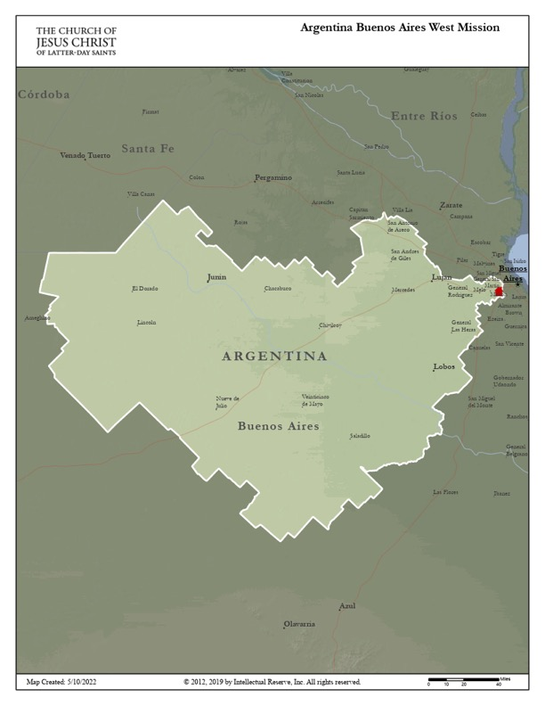

This page was made from scratch, by me!
This page will include all of the required elements. I'll start with a list of my favorite classes this semester, and why!
- IS 201
- This class has helped me learn many useful online skills
- I was opened up to a possible new career path through this class
- The class has been challenging, but one of my most enjoyable of the semester
- Foundations of the Restoration
- This class has taught me a lot of important Church History
- I will be able to use much of the info I have learned on my mission
- It was one of my most engaging classes of the semester
- Organ
- I have been able to learn a unique, useful skill
- The class was very heavily centered around hands-on learning
- I will be able to use this new skill of organ playing throughout my life, and hopefully on my mission
Speaking of my mission, I will be serving in the Argentina Buenos Aires West Mission starting May 8th! Here is the map of my mission.
Many people struggle with the pronunciation of Buenos Aires. I know I did when I recieved my mission call! Here is a video demonstrating the proper pronunciation of Buenos Aires.
There is no temple in my mission, but the Argentina Buenos Aires Temple is 3 miles outside my mission boundaries! They have also announced the Argentine Buenos Aires City Center Temple, but there has not been an offical location announced for it yet. Here is a map of all the temples in operation in the entire world!